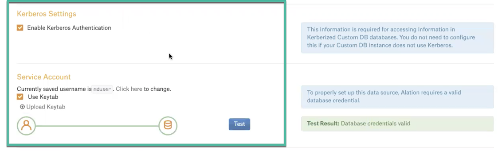
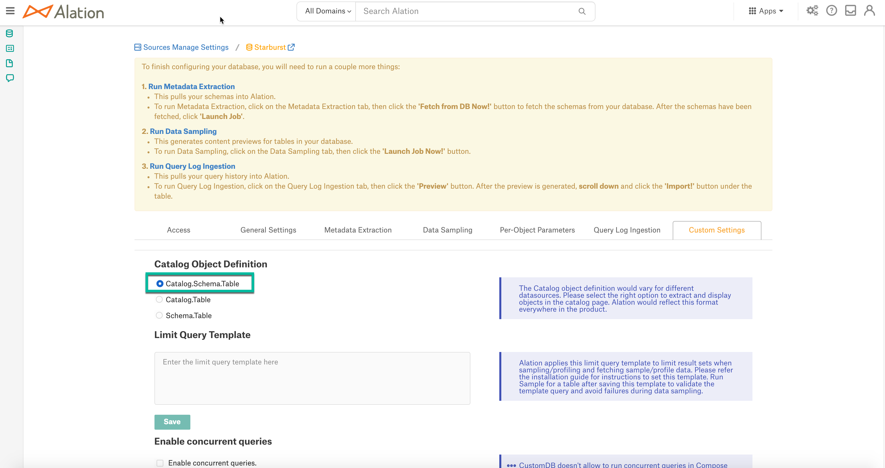
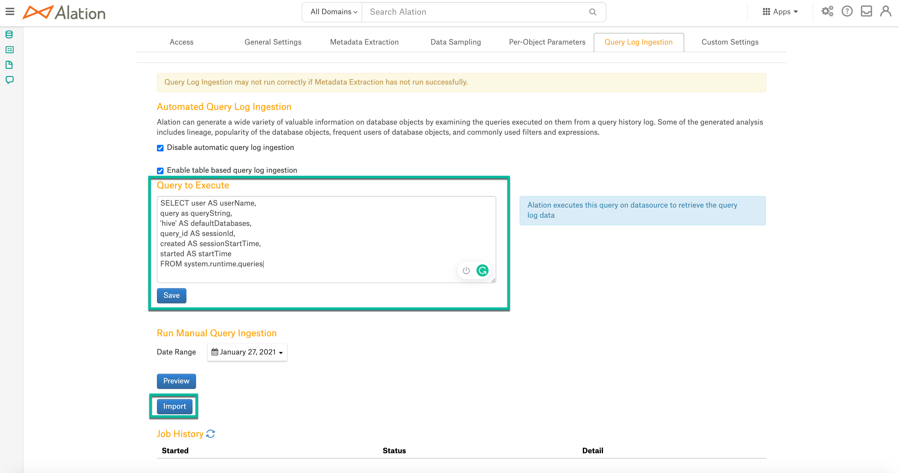

Starburst Enterprise (Presto)¶
Applies from version 2021.1
A Starburst Enterprise data source can be added to Alation as Custom DB using the Presto JDBC driver.
Scope of Support¶
Metadata extraction (MDE)
Compose
Data profiling
Query Log Ingestion (QLI)
Lineage
Ports¶
The following ports must be open:
8080
7778—This port must be open if Kerberos authentication is used.
Prerequisites¶
Applies from version 2021.2
Kerberos for Datasource Authentication¶
See Configuring Kerberos for Data Source Authentication for information on configuring Kerberos on the Alation server.
Keytab¶
Perform the following steps to setup authentication with a keytab:
Copy the truststore certificate (the presto.jks file) from the EMR host into the Alation instance /data1/tmp. This path is located in the Alation shell.
Copy the .keytab file for the service account and place it in the following path: /data1/tmp. This path is located in the Alation shell.
Enter the Alation shell.
sudo /etc/init.d/alation shell
Update the Java certificate using the alation_conf command as shown below.
Note
In place of
changeituse the value of propertyhttp-server.https.keystore.keyfrom theconfig.propertiesfile of the Presto instance.Important
If the alation_conf attributes already have some other values, append new values but do not overwrite the existing ones.
alation_conf taskserver.extra_flags -s " -Djavax.net.ssl.trustStore=/data1/tmp/presto.jks -Djavax.net.ssl.trustStorePassword=changeit" alation_conf connector.extra_flags -s " -Djavax.net.ssl.trustStore=/data1/tmp/presto.jks -Djavax.net.ssl.trustStorePassword=changeit" alation_conf elasticsearch.env.es_java_opts -s " -Djavax.net.ssl.trustStore=/data1/tmp/presto.jks -Djavax.net.ssl.trustStorePassword=changeit"
Execute the following command to restart the Java component:
alation_supervisor restart java:*
Restart Alation.
alation_action restart_alation
Service Account¶
Set up a service account to perform metadata extraction, profiling, and query log ingestion.
Query Log Ingestion¶
Users must have the admin rights to system.runtime.queries table to perform QLI. This table has all the queries recorded and the admin user can ingest the queries into Alation from this table.
Limitation¶
Presto retains queries based on the query.min-expire-age (default 15) and query.max-history (default 100) configuration properties. Alation ingests only the queries that are retained by Presto at the time of QLI job execution.
Step 1: Add the Presto JDBC Driver to Alation¶
Perform the following steps to the Presto driver to the Alation instance:
Download the Presto JDBC driver.
Copy the driver .jar to a directory on the Alation host, for example, /tmp.
scp <path to the driver> <your_username@alation_host>:/tmp/
Use SSH to connect to the Alation server.
Go to the directory /opt/alation/alation-<version>/data1/site_data/custom_drivers/.
<version>stands for your Alation version, for example:cd /opt/alation/alation-5.14.0.113546/data1/site_data/custom_drivers/
Move the driver .jar to this directory.
sudo scp /tmp/driver.jar .
Restart Alation.
alation_action restart_alationExit the shell.
exit
Step 2: Add a New Data Source¶
Add a new data source:
Log in to Alation as a Server Admin.
Expand the Apps menu on the right of the main toolbar and select Sources.
On the Sources page, click +Add on the top right of the page and in the list that opens, click Data Source. This will open the Add a Data Source wizard.
On the first screen of the wizard, specify a name for your data source, assign more Data Source Admins, if necessary, and click the Continue Setup button on the bottom of the screen.
Step 3: Set up the Connection¶
On the Add a Data Source screen of the wizard, specify:
Click Save and Continue. The next wizard screen—Set Up a Service Account—will open.
{kind=link}
JDBC URI¶
JDBC URI with Kerberos Authentication¶
Include the following components into the URI:
Host name
Port number
Database name
KerberosRemoteServiceName—The Presto coordinator Kerberos service name.
KerberosKeytabPath—The location of the the keytab that can be used to authenticate the principal specified by the Kerberos Principal.
KerberosPrincipal—The Principal to use when authenticating to the coordinator.
Format¶
presto://<Host_Name>:<Port>/<Database_Name>/default?SSL=true&KerberosRemoteServiceName=<value>&KerberosKeytabPath=<value>&KerberosPrincipal=<value>
Example¶
presto://presto_instance.alation-test.com:7778/hive/default?SSL=true&KerberosRemoteServiceName=presto&KerberosKeytabPath=/data1/tmp/presto.keytab&KerberosPrincipal=presto@ALATION-TEST.COM
Basic Authentication¶
Format¶
presto://<Host_Name>:<Port>/<Database_Name>
Example¶
presto://10.13.29.227:8080/sales
Step 4: Enter Service Account Credentials¶
On the Set Up a Service Account screen of the wizard, select Yes under Have you already created a Service Account with all required permissions?
Under Provide your Service Account credentials, specify the username and the password of the service account.
Click Save and Continue. The next wizard screen—Configure Your Data Source—will open.
Step 5: Go to Settings¶
On the Configure Your Data Source screen of the wizard, click Skip this Step. After this step, you are navigated to the Settings page of your data source.
Step 6: Populate the Access Tab¶
On the Access tab, specify the privacy settings for the data source and give access to users.
Step 7: Populate General Settings¶
On the General Settings tab, perform the following:
Select the Enable Kerberos Authentication checkbox.
Select the Use Keytab checkbox and upload the .keytab file using the Upload Keytab button.

Metadata Extraction¶
Enable Presto Parser¶
For your data source, enable the Presto parser grammar on the Alation server before performing extraction.
Find your data source ID. See How to Find Data Source ID for more information.
On the Alation server, enter the Alation shell.
sudo /etc/init.d/alation shell
Change the user to
alation.sudo su alation
Go to the directory /opt/alation/django.
cd /opt/alation/django
Run a one-off script from this directory to enable Presto parser grammar for your Starburst data source, substituting
<id>with the data source ID.python -m rosemeta.one_off_scripts.assign_customdb_parser_dbtype -ds_id <id> -parser_dbtype presto
Exit from the user
alation.exitExit from the Alation shell.
exit
Perform Metadata Extraction¶
Configure and perform metadata extraction and verify the results:
In Settings > Custom Settings, set the Catalog Object Definition to
Catalog.Schema.Table:In Settings > Metadata Extraction, set up and perform MDE. Refer to Metadata Extraction From Custom DB for details.
Profiling¶
Configure and perform Sampling and Profiling:
Users can run a sample for an individual table on the Samples tab of the table catalog page or profile an individual column on the Overview tab of the column page.
Automatic full and selective profiling is supported.
Use the Per-Object Parameters in Settings to specify which objects to profile.
Custom query-based sampling is supported. Custom Query-Based Sampling allows you to provide a custom query for profiling each specific table.
Deep column profiling (Profiling V2) is supported.
Query Log Ingestion¶
On the Query Log Ingestion tab, provide the query given below in the Query to Execute field and click Save:
SELECT user AS userName, query AS queryString, source AS defaultDatabases, False AS sessionId, created AS sessionStartTime, started AS startTime, False AS cancelled, date_diff('second',"started", "end") AS secondsTaken, query_id AS sequence FROM system.runtime.queries WHERE state ='FINISHED' AND started between timestamp 'STARTTIME1' and timestamp 'STARTTIME2' ORDER BY sessionId, startTime
Click Import to import the queries into Alation.

Compose¶
Log into Compose:
Authenticate compose with your Starburst Enterprise credentials.
Use the
Catalog.Schema.Tableformat for writing queries.
CREATE SCHEMA Queries¶
When writing the CREATE SCHEMA queries, include the data source location. The location can either be in Amazon S3 or HDFS, for example:
CREATE schema IF NOT EXISTS test_presto_profiling WITH (location = 's3://tf-altion-test-starburst-bucket/al/profiling');
Troubleshooting¶
Log location:
You can access most logs from inside the Alation chroot at /opt/alation/site/logs.
Logs to review:
Logs related to MDE: taskserver.log, taskserver_err.log.
Logs related to Compose: connector.log, connector_err.log.
Other errors: alation-error.log, alation-debug.log.